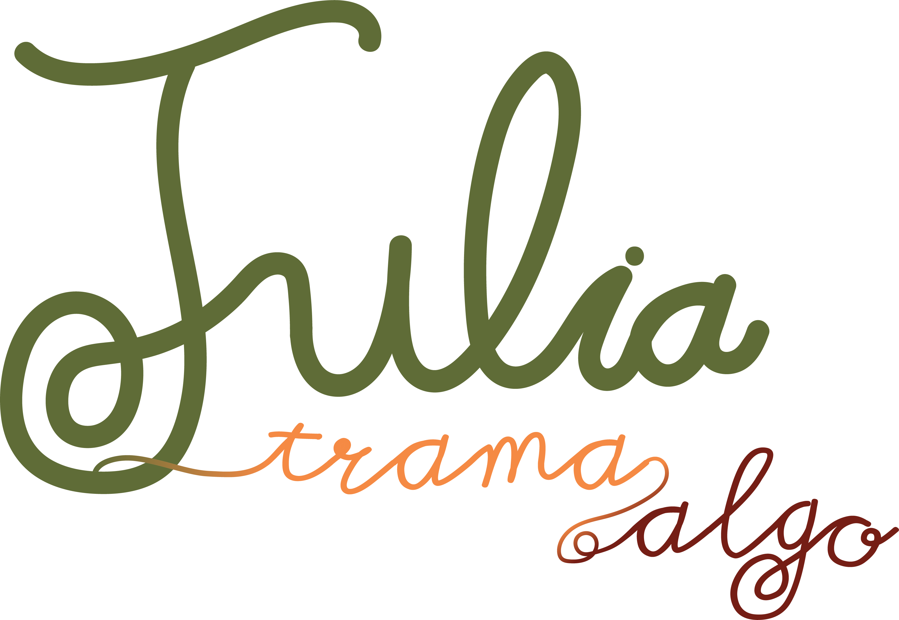
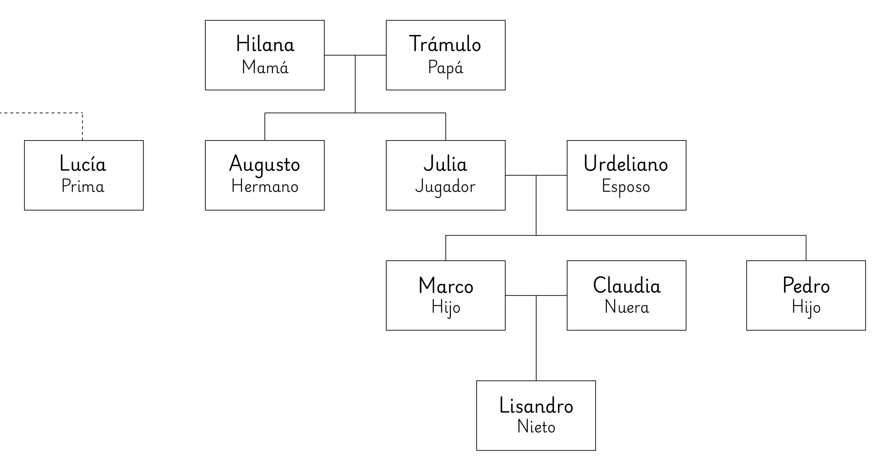
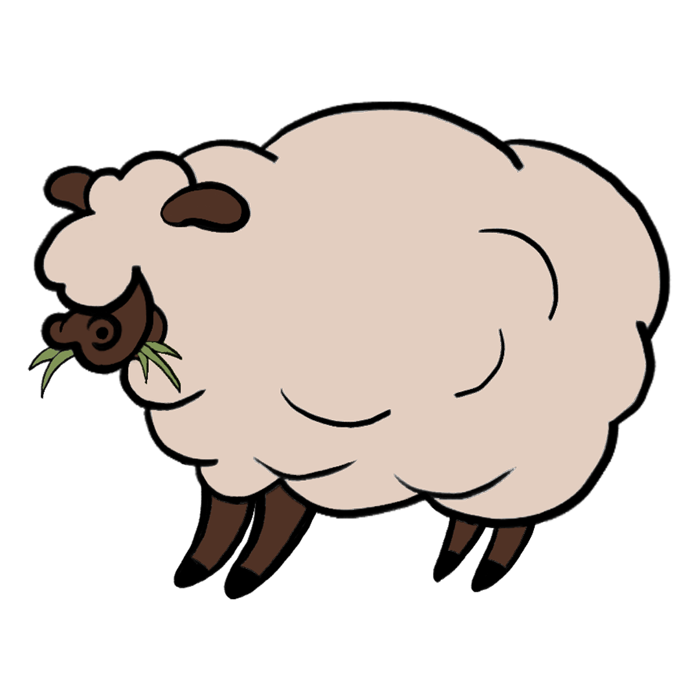

Inspiración
La ruana es una prenda estrechamente ligada al altiplano cundiboyacense en Colombia. Su permanencia como modelo cultural y material ─es decir, como arquetipo─ se debe a la disponibilidad de lana, a los saberes transmitidos entre generaciones y a los modos de vida campesina. Hoy esa tradición enfrenta retos: la competencia con otras prendas del mercado y el hecho de que muchos jóvenes prefieran otros proyectos de vida. Cada ruana es más que una prenda: es la instanciación del arquetipo y, al mismo tiempo, el resultado de un proceso productivo que conecta artesanos, ovejas, tierras y saberes. Estas relaciones —entre formas de vida humanas y no humanas, procesos y materiales— se encuentran hoy en riesgo de desaparecer.
Entrevistas
Durante el proceso de investigación se realizaron entrevistas a artesanos de dos pueblos de Boyacá: Villa de Leyva y Aquitania. El siguiente video recoge extractos de las experiencias narradas por Carlos Bernal y Daniza Sáenz, cuyas voces permiten evidenciar la tensión entre la tradición y la innovación y las dificultades que enfrentan actualmente, entre ellas los retos asociados al relevo generacional. A través de sus testimonios es posible imaginar la forma como se acercaron al oficio, reconocer algunos de los cambios en producción de ruanas a lo largo del tiempo y comprender qué elementos consideran escenciales para definir esta prenda.
Juego
Julia Trama Algo, es un juego (en proceso) conversacional y de exploración en desplazamiento lateral (side scrolling). Desde una intención reconstructiva y especulativa, se presentan escenas cotidianas en tres épocas ─1946, 1975 y 2025─. El jugador habita la perspectiva de Julia, artesana, en tres momentos de su vida: de niña, aprendiendo a tejer observando a sus padres; de adulta, a cargo del hogar y la producción; y de mayor, viendo a su hijo continuar con la tradición. Las escenas transcurren en tanto en el interior de la casa como en los pastizales del campo que la rodean. La cultura material de cada momento histórico ha sido reconstruida visualmente con atención al detalle, con el propósito de transportar al jugador a distintas épocas. El videojuego se plantea así como un medio para re-narrar la vida cotidiana en torno a la producción textil artesanal y abrir una reflexión crítica sobre los futuros posibles de este patrimonio vivo en América Latina.
Controles
Flechas o WASD ⭢ Mover.
Espacio ⭢ Hablar e interactuar.
Demo
Descargar Julia Trama Algo v1.5.zip 277 MB
Video
Equipo
Jaime Rodríguez ↗
Direccion creativa
Historia y guion
Desarrollo de sistema narrativo
Diseño sonoro
Programación
Nikolai Rubio ↗
Diseño y animación de personajes
Maribel López ↗
Dirección de arte
Diseño de props y escenarios
Alejandro Izquierdo
Guía de personajes
Investigación histórica y etnográfica
Agradecimientos
Catalina Gómez
Asistencia en trabajo de campo, realización y grabación de
entrevistas
Edición de video
Brayant Ramirez
Asistencia en investigación y exploraciones creativas iniciales
Daniza Saenz
Artesana textil, diseñadora y productora de ruanas de Villa de Leyva,
Boyacá
Carlos Bernal
Artesano textil, diseñador y productor de ruanas de Aquitania,
Boyacá
Personajes
El guion del juego salta entre tres momentos:
Julia a los 6 años aprendiendo el oficio de sus padres (1946),
Julia a los 35 cuidando a su familia y cumpliendo encargos de
tejido (1975), y Julia a los 85 acompañando a su hijo
Marco en su taller-almacén (2025). Los personajes aquí
descritos son la arquitectura invisible que le da coherencia emocional
a esos tres saltos temporales.
Los nombres en esta historia ─Trámulo, Hilana, Urdeliano, Lisandro─ son nombres propios de raigambre campesina boyacense, que evocan un
mundo oral donde cada persona lleva en su nombre una pequeña historia.


✖
| Año de nacimiento | 1906 |
| Edad en el juego | 40 años (1946) |
| Oficio | Tejedor de ruanas en telar de palo. Ganadero menor. |
| Rasgo central | Hombre de pocas palabras y manos muy hábiles. Enseña con el ejemplo, no con el discurso. |
| Relación con Julia | Padre amoroso pero contenido, como lo permite la cultura campesina de la época. Julia lo admira sin que él lo sepa. |